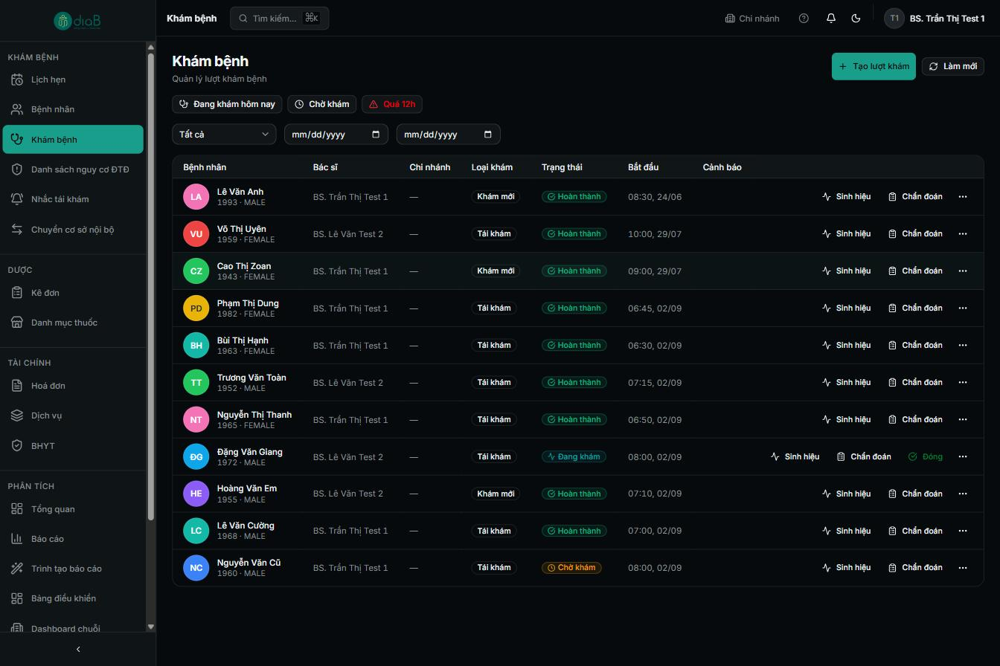
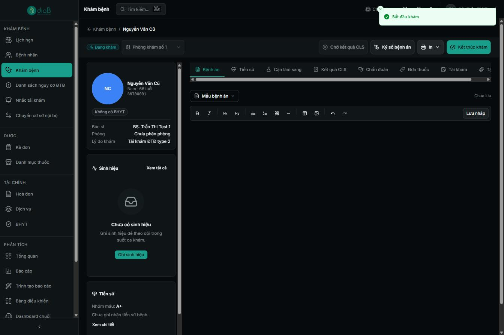
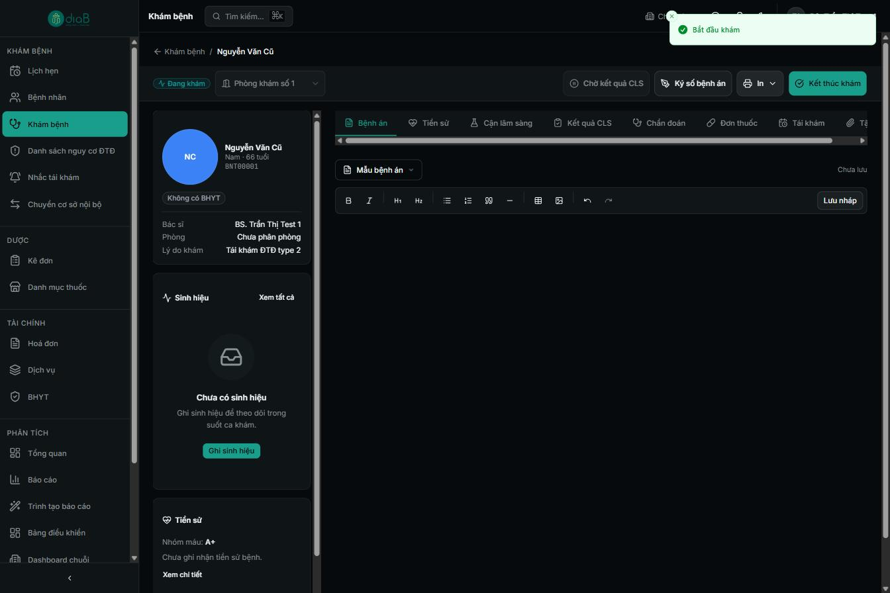
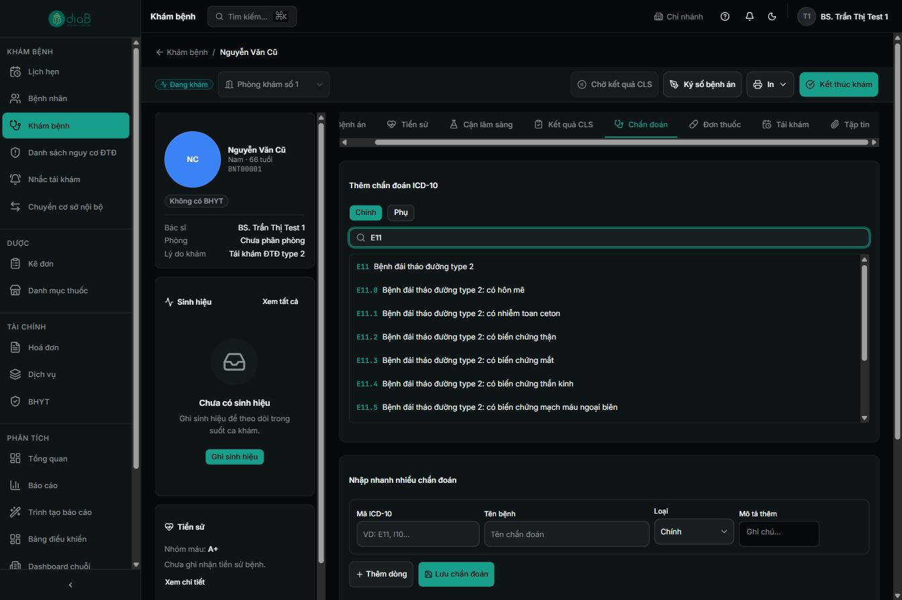
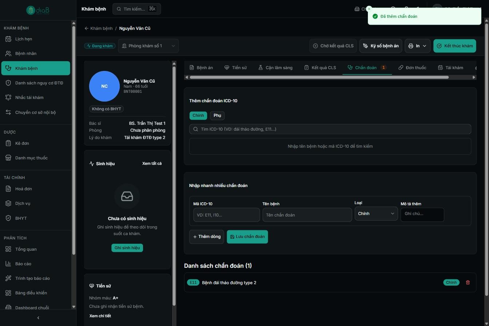
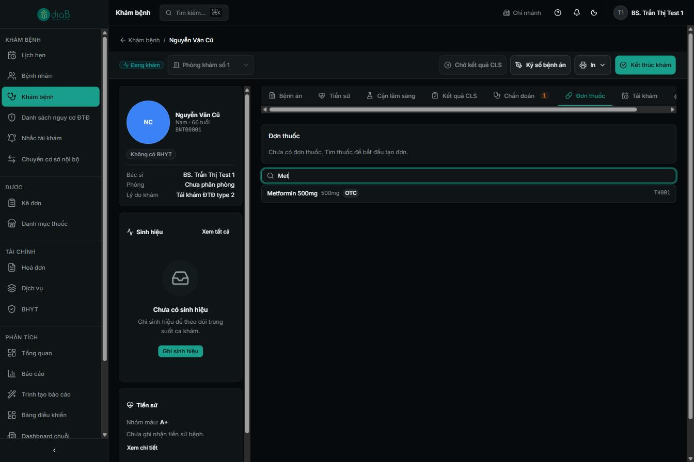
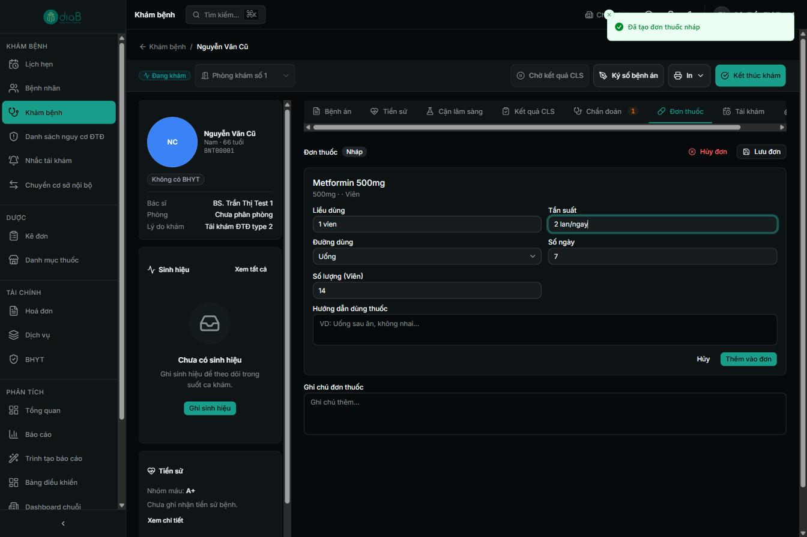
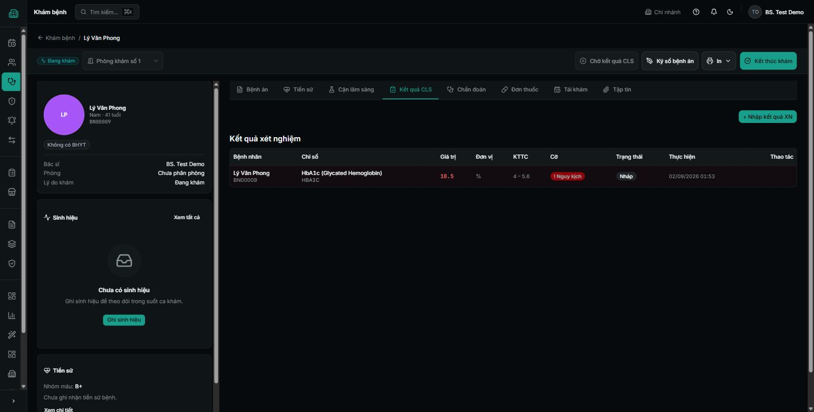

Vai trò: Bác sĩ
Khám bệnh, kê đơn & duyệt kết quả CLS
Hướng dẫn đầy đủ luồng khám của bác sĩ: nhận bệnh nhân, ghi bệnh án, chẩn đoán ICD-10, kê đơn thuốc, và xem/duyệt kết quả cận lâm sàng bất thường.
Tổng quan luồng khám bệnh
Từ danh sách lượt khám, bác sĩ mở hồ sơ bệnh nhân đang chờ, bắt đầu khám, lần lượt ghi bệnh án, thêm chẩn đoán ICD-10, kê đơn thuốc, chỉ định cận lâm sàng nếu cần, rồi kết thúc khám. Với kết quả xét nghiệm bất thường, bác sĩ xem và duyệt trên màn hình CLS.
Sơ đồ luồng rút gọn
- Mở Khám bệnh → chọn lượt khám (Chờ khám / Đang khám).
- Bấm Bắt đầu khám.
- Thẻ Bệnh án: ghi diễn biến (có thể dùng “Mẫu bệnh án”).
- Thẻ Chẩn đoán: tìm & thêm mã ICD-10 (chính/phụ).
- Thẻ Đơn thuốc: tìm thuốc, nhập liều dùng, lưu đơn.
- (Tuỳ chọn) chỉ định CLS, Ký số bệnh án.
- Bấm Kết thúc khám.
Vai trò tham gia
| Vai trò | Tham gia bước nào | Quyền cần có |
|---|---|---|
| Bác sĩ | Toàn bộ luồng khám, chẩn đoán, kê đơn, duyệt CLS | Vai trò Bác sĩ (67 quyền) |
| Kỹ thuật viên | Nhập kết quả CLS do bác sĩ chỉ định | Vai trò Kỹ thuật viên |
| Dược sĩ | Cấp phát thuốc theo đơn bác sĩ kê | Vai trò Dược sĩ |
Điều kiện tiên quyết
- Đã đăng nhập bằng tài khoản Bác sĩ và chọn đúng chi nhánh.
- Có bệnh nhân đã được lễ tân tiếp đón và xếp vào hàng đợi phòng khám.
1Chọn lượt khám
Vào menu Khám bệnh. Danh sách lượt khám hiển thị theo cột: Bệnh nhân, Bác sĩ, Chi nhánh, Loại khám, Trạng thái, Bắt đầu, Cảnh báo. Lọc nhanh bằng các thẻ Đang khám hôm nay, Chờ khám, Quá 12h.

- ① Bộ lọc nhanh: Đang khám hôm nay / Chờ khám / Quá 12h.
- ② Cột Trạng thái: Chờ khám (vàng) hoặc Đang khám (xanh).
- ③ Bấm vào một dòng để mở lượt khám.
2Mở lượt khám & Bắt đầu khám
Màn hình chi tiết lượt khám có các thẻ: Bệnh án, Tiền sử, CLS, Kết quả, Chẩn đoán, Đơn thuốc, Tái khám, Tập tin. Bấm Bắt đầu khám để chuyển trạng thái sang Đang khám; khi đó xuất hiện thêm các nút Chờ kết quả CLS, Ký số bệnh án, In, Kết thúc khám.

- ① Nút Bắt đầu khám → trạng thái chuyển Đang khám.
- ② Dải thẻ công việc: Bệnh án · Tiền sử · CLS · Kết quả · Chẩn đoán · Đơn thuốc · Tái khám.
- ③ Nút Kết thúc khám (dùng ở bước cuối) và Ký số bệnh án.
3Ghi bệnh án
Ở thẻ Bệnh án, dùng trình soạn thảo để ghi lý do khám, triệu chứng, khám lâm sàng… Có thanh định dạng (đậm, nghiêng, tiêu đề, danh sách, bảng…) và nút Lưu nháp. Bấm Mẫu bệnh án để chèn nhanh mẫu có sẵn (EMR) nhằm tiết kiệm thời gian.

- ① Nút Mẫu bệnh án — chèn mẫu EMR có sẵn.
- ② Thanh công cụ định dạng văn bản.
- ③ Nút Lưu nháp để lưu tạm nội dung.
4Chẩn đoán ICD-10
Chuyển sang thẻ Chẩn đoán. Chọn loại Chính hoặc Phụ, gõ tên bệnh hoặc mã vào ô Tìm ICD-10 (VD: “E11” hoặc “đái tháo đường”), rồi bấm chọn kết quả. Hệ thống báo “Đã thêm chẩn đoán” và số lượng chẩn đoán hiển thị trên nhãn thẻ.

- ① Chọn loại Chính / Phụ.
- ② Ô Tìm ICD-10 — gõ mã/tên bệnh (VD “E11”).
- ③ Bấm chọn mã trong danh sách gợi ý (VD E11 – Bệnh đái tháo đường type 2).

- ① Thông báo xanh “Đã thêm chẩn đoán”.
- ② Nhãn thẻ Chẩn đoán hiển thị số lượng đã thêm.
💡 Có thể dùng khối “Nhập nhanh nhiều chẩn đoán” để nhập một loạt mã ICD-10 kèm loại (Chính/Phụ) và mô tả thêm.
5Kê đơn thuốc
Chuyển sang thẻ Đơn thuốc. Gõ tên hoặc mã thuốc vào ô Tìm thuốc, bấm chọn thuốc — hệ thống tạo đơn nháp. Với mỗi thuốc, nhập Liều dùng, Tần suất, Đường dùng, Số ngày, rồi bấm Lưu đơn.

- ① Ô Tìm thuốc theo tên hoặc mã.
- ② Bấm chọn thuốc trong kết quả (VD Metformin 500mg) → tạo đơn nháp.

- ① Nhập Liều dùng (VD 1 viên) và Tần suất (VD 2 lần/ngày).
- ② Chọn Đường dùng (VD Uống) và Số ngày (VD 7).
- ③ Bấm Lưu đơn; dùng Hủy đơn nếu muốn bỏ.
⚠️ Lưu ý: Đơn ở trạng thái Nháp cho tới khi bạn lưu/hoàn tất. Sau khi khám xong, đơn được chuyển tới kho dược để dược sĩ cấp phát (xem trang Dược sĩ).
6Kết thúc khám
Khi đã ghi đủ bệnh án, chẩn đoán và đơn thuốc, bấm Ký số bệnh án (nếu áp dụng) rồi Kết thúc khám. Nếu còn chờ kết quả xét nghiệm, dùng nút Chờ kết quả CLS để tạm giữ ca và gọi bệnh nhân tiếp theo.
Nhánh rẽ: Chờ kết quả CLS — dùng khi đã chỉ định xét nghiệm/chẩn đoán hình ảnh: ca khám được tạm dừng, chờ kỹ thuật viên nhập kết quả rồi bác sĩ tiếp tục đánh giá.
7Xem & duyệt kết quả CLS bất thường
Vào menu CLS (Cận lâm sàng). Màn hình liệt kê kết quả theo cột Bệnh nhân, Chỉ số, Giá trị, Đơn vị, KTTC, Cờ. Cột Cờ cho biết kết quả Bình thường hay bất thường (Cao/Thấp, hiển thị màu đỏ) — giúp bác sĩ nhận ra ngay chỉ số cần chú ý.

- ① Thẻ danh mục: Kết quả xét nghiệm · Kết quả CĐHA · Đối tác lab · Tích hợp lab.
- ② Cột Cờ: Bình thường (xanh) hoặc Cao/Thấp (đỏ) — chỉ số bất thường.
Để lọc riêng các kết quả chưa duyệt, mở bộ lọc trạng thái và chọn Nháp (kết quả kỹ thuật viên vừa nhập, chưa được xác thực). Sau khi kiểm tra, bác sĩ/người có quyền xác thực để chuyển kết quả sang trạng thái Đã xác thực.

- ① Bộ lọc trạng thái: Nháp (chưa duyệt) / Đã xác thực / Đã sửa.
- ② Chọn Nháp để chỉ xem kết quả cần duyệt.
💡 Báo cáo “Kết quả CLS bất thường chưa duyệt” trong mục Báo cáo giúp quản lý/bác sĩ theo dõi tập trung các kết quả bất thường còn tồn đọng.
Câu hỏi thường gặp
- Gõ ICD-10 nhưng không ra kết quả?
- Thử gõ mã (VD “E11”) thay vì tên, hoặc gõ từ khoá tiếng Việt không dấu. Danh mục ICD-10 do quản trị viên cấu hình trong mục Danh mục mã.
- Lỡ chọn nhầm thuốc trong đơn?
- Dùng nút Hủy đơn để bỏ đơn nháp và tạo lại, hoặc xoá dòng thuốc rồi tìm thuốc khác.
- Đã bắt đầu khám nhưng cần tạm dừng để khám ca khác?
- Dùng nút tạm dừng ca khám (gọi bệnh nhân tiếp theo) hoặc Chờ kết quả CLS; ca khám vẫn được giữ để quay lại sau.